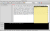
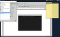

X Window Dump
Dieser Artikel wurde für die folgenden Ubuntu-Versionen getestet:
Dieser Artikel ist größtenteils für alle Ubuntu-Versionen gültig.
Zum Verständnis dieses Artikels sind folgende Seiten hilfreich:
„X Window Dump“ (xwd) und „X Window Undump“ (xwud) sind zwei Programme aus dem X Window System. „X Window Dump“ erstellt ein Bild des gesamten Bildschirms oder eines Fenstes in einem speziellen Format. „X Window Undump“ kann ein solches Bild in einem Fenster darstellen. Mit Bildbearbeitungsprogrammen wie GIMP können die Bilder nachbearbeitet und in ein übliches Bildformat umgewandelt werden.
Alternativen für das Terminal sind der import Befehl von ImageMagick und das Programm Scrot. Programme mit grafischer Oberfläche bringen die Desktop-Umgebungen in der Regel mit, eine Übersicht bietet der Artikel Bildschirmfotos.
Installation¶
Die Programme sind in der Standardinstallation eines jeden Ubuntu mit grafischer Oberfläche enthalten.
x11-apps -
xwdundxwudx11-utils -
xwininfo(Hilfsprogramm, siehe unten)
Bedienung¶
Alle drei Werkzeuge werden im Terminal aufgerufen [1]. Bei der Aufnahme mit xwd kann entweder der gesamte Bildschirm (-root) oder ein Fenster aufgenommen werden. Dabei muss wenigstens der Name der Ausgabedatei angegeben werden:
xwd -out dateiname.xwd
Anschließend wird das aufzunehmende Fenster mit der Maus  gewählt. Um diese interaktive Auswahl zu umgehen, kann ein Fenster beim Programmaufruf über seine ID oder seinen Namen ausgewählt werden. Um Namen und ID eines Fensters herauszufinden, kann man
gewählt. Um diese interaktive Auswahl zu umgehen, kann ein Fenster beim Programmaufruf über seine ID oder seinen Namen ausgewählt werden. Um Namen und ID eines Fensters herauszufinden, kann man xwininfo benutzen. Manche Programme, wie zum Beispiel Firefox haben allerdings ein namenloses Eltern- und mehrere Kindfenster. Hier können die Fenster nicht über den Namen, aber über die ID angesprochen werden. Informationen zu Eltern- und Kindfenstern liefert xwininfo -tree.
| Parameter beim Programmaufruf | |
| Parameter | Beschreibung |
-root | Nimmt den gesamten Bildschirm auf. |
-screen | Bei Aufnahme eines Fensters werden andere Fenster und Menüs, die das gewählte Fenster überlappen, mit aufgenommen. |
-id ID | Die ID des Fensters, herauszufinden mit xwininfo. |
-name NAME | Der Name des Fensters, herauszufinden mit xwininfo. |
-frame | Bei Aufnahme eines Fensters wird der Rahmen des Fenstermanagers mit aufgenommen. Dies funktioniert nur bei interaktiver Wahl des Fensters. |
-nobrds | Lässt den Rahmen des Fensters weg. |
-display DISPLAY | Gibt bei Verwendung mehrerer X-Displays das gewünschte Display an. |
-silent | Unterdrückt Töne. |
-out DATEI.xwd | Legt die Ausgabedatei fest. |
Weitere Parameter beschreibt die Manpage.
Beispiele¶
Im ersten Beispiel wird ein Fenster aufgenommen, inkl. mit allem was sich darüber (oberhalb) befindet. Das zweite Beispiel nimmt den gesamten Desktop zeitverzögert auf, damit man beispielsweise noch das Startmenü öffnen kann. Zu beiden Beispielen sind Bilder beigefügt, die unter Xfce aufgenommen und mit GIMP nachbearbeitet wurden.
|  |
| Fenster |
Fenster¶
Um das Fenster mit dem Namen *Dokument1 und alle Elementen, die das Fenster überlappen, aufzunehmen, verwendet man folgenden Befehl:
xwd -screen -name "*Dokument1" -out Fenster.xwd
Bildschirm¶
|  |
| Bildschirm |
Um den gesamten Bildschirm mit einer Verzögerung von fünf Sekunden aufzunehmen, kann man wie folgt vorgehen:
sleep 5 && xwd -root -out Bildschirm.xwd
Bild ansehen mit xwud¶
Um ein Bild anzusehen, muss xwud die Eingabedatei mitgeteilt werden:
xwud -in Fenster.xwd
 Programmübersicht
Programmübersicht- Erstellt mit Inyoka
-
 2004 – 2017 ubuntuusers.de • Einige Rechte vorbehalten
2004 – 2017 ubuntuusers.de • Einige Rechte vorbehalten
Lizenz • Kontakt • Datenschutz • Impressum • Serverstatus -
Serverhousing gespendet von